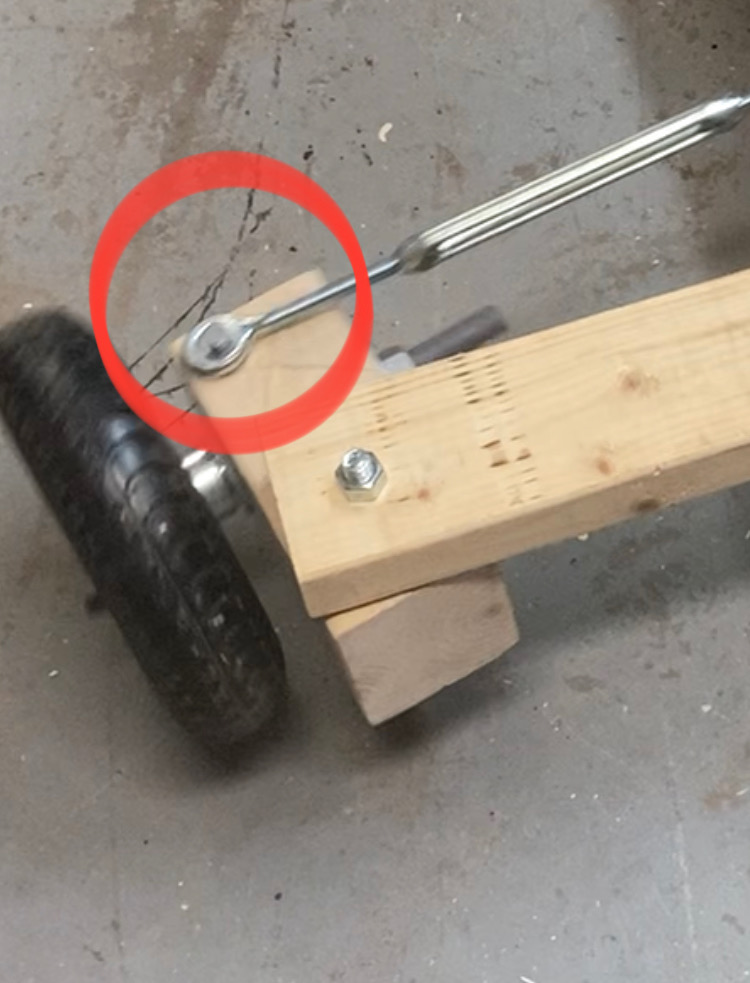
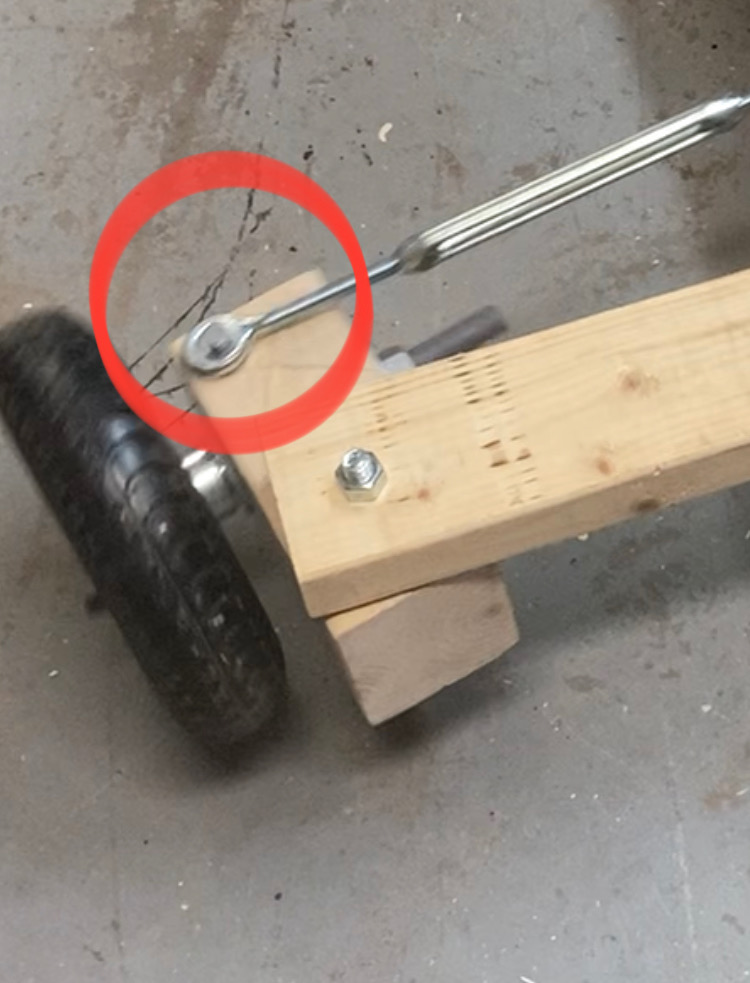

Project Description
The main goal for this project was to build a Go-kart over in the summer. As a result, the design of the Go-kart is made to be as simple as possible, with the only complication involved in the powertrain and steering system.
Project Details
This Go-kart is design with a Ackermann steering system, providing different turning angles for the front wheels. What this does is that it gives the driver greater handling compared a non-Ackermann steering system.


These are images of blueprints for the go kart, both for the steering system and the rear axle. This step in the project helped me with calculating what I need, how everything should be put together, and figuring out the measurements.
 


The steering system is designed to be an Reverse Ackermann steering system, allowing for more mechanical grip while cornering. This was applied by moving the joint (first image under, circled with a red circle) outwards, where the result should correlate to the third example in the bottom image. Using a reverse Ackermann system was essential, as it avoided any moving component in the steering system (the wood block connecting the tire). Later on it was figured that the joint can be pushed more inwards into the wooden block. However, The steering column was adjustable by screwing either left or right, which would lead to an steering issue with the root cause of vibrations from the tire.
Challenges and Solutions
One of the issues that came up during this project was the reliability of the steering system. For instance, as you turn the Go-kart, the front wheels will begin to bend and break due to the lateral forces applied onto them. To solve this, the front of the Go-kart needed more stability to support the wheels. Thus, a long metal piece was added in order to keep the wheels in place. The solution resulted in a much more reliable Go-kart, providing more time to drive the Go-kart.